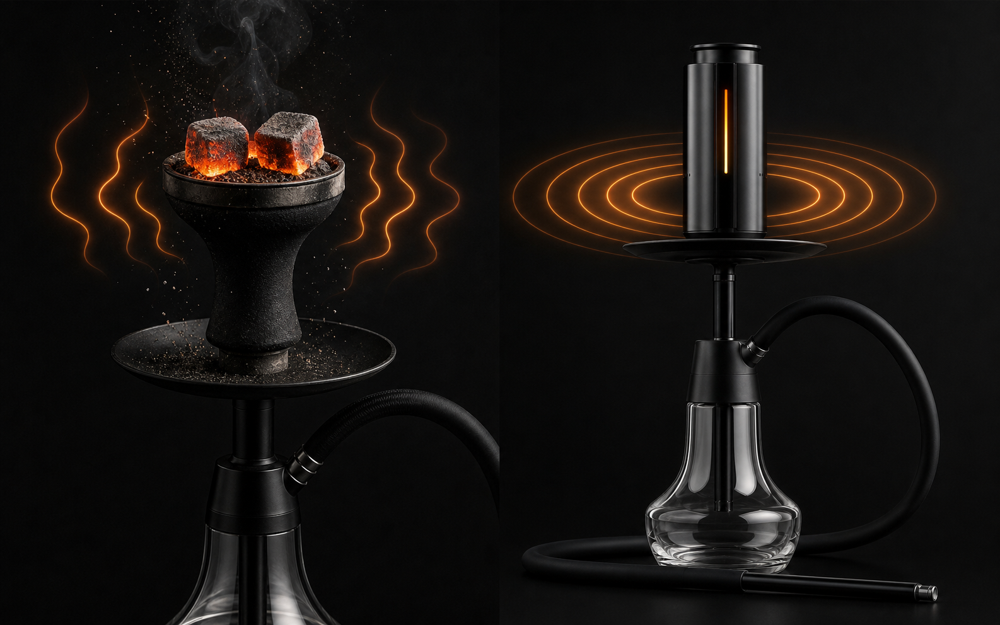
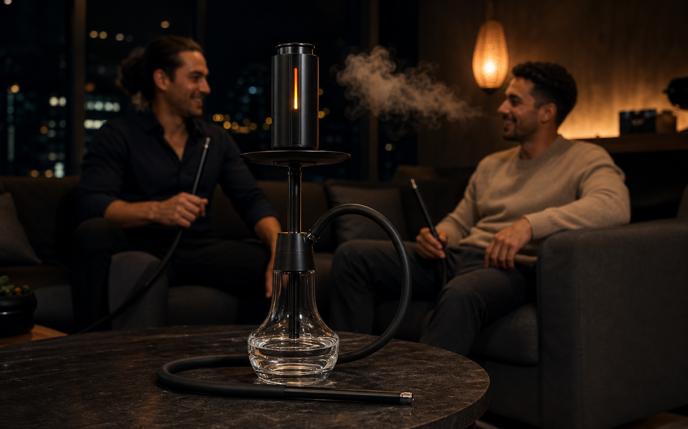

For generations, charcoal has been inseparable from hookah. Lighting the cubes, waiting for them to glow, positioning them over the bowl, and rotating them as the session develops are familiar parts of the ritual. For many enthusiasts, that process is part craft and part habit.
But it also makes heat the least predictable part of the experience. Coal quality, airflow, room temperature, placement, and timing can all change what reaches the shisha. Electronic heat management devices—often called eHMDs—replace that variable heat source with a controllable electric one.
Why the shift is happening now
The appeal is not simply that electronics are newer. The real change is that enthusiasts are beginning to treat heat as a repeatable setting instead of a skill that must be reconstructed for every bowl.
Consistency matters more as flavors become more nuanced
Delicate citrus, floral, mint, and layered blends can react differently to excess heat. With charcoal, the first part of a session may run hot while the final part fades. A controlled heating system can make it easier to return to a preferred setting and adjust deliberately.
People want less equipment around the session
Traditional preparation often means a coal burner, tongs, foil or an HMD, spare coals, and somewhere safe for ash. Electronic heating does not remove the hookah ritual; it reduces the separate charcoal-management routine around it.
An electronic HMD is not the same as a vape. It heats shisha in a hookah bowl and keeps the water base, hose, draw, and social format of the hookah experience.
Heat becomes something you can control
Charcoal continually changes as it burns. Moving a cube outward or removing one can help, but the response is indirect. Electric systems allow heat to be selected more intentionally, which makes experimentation easier to repeat.

This does not mean one temperature is correct for every bowl. Packing density, tobacco style, moisture, bowl material, and personal preference still matter. The advantage is having a stable starting point and a clearer way to change one variable at a time.
What changes—and what stays
Moving beyond charcoal removes the lighting and ash-management steps, but the recognizable parts of hookah remain: preparing the bowl, selecting a flavor, drawing through water, and sharing the experience.
- Less charcoal handling: no cubes to light, rotate, or dispose of during the session.
- Cleaner preparation: fewer ash particles and fewer heat-management accessories on the table.
- More repeatable sessions: a preferred heat setting can provide a consistent reference point.
- Different pacing: electronic heating requires its own preheat routine rather than the familiar coal-lighting routine.

What enthusiasts should expect
An eHMD is not intended to imitate every characteristic of charcoal. Someone who specifically values the hands-on coal ritual or its smoky overlay may still prefer a traditional setup. The strongest case for electric heating is control, convenience, and a cleaner table—not nostalgia.
There is also a learning curve. Users still need to understand bowl preparation and select a heat level appropriate for their blend. Better control does not replace technique; it makes the effects of technique easier to observe.
The SOLUNA X1 approach
SOLUNA X1 is designed as an intelligent hookah heat head rather than a replacement for the whole hookah. It fits into the familiar session while replacing charcoal with adjustable electric heating.
Temperature-sensor protection, overheat protection, and automatic shutoff support the system’s safer-by-design approach. USB-C charging and the rechargeable battery are intended to make the device practical for home and lounge use.
Beyond charcoal, without leaving hookah behind.
Electronic heat management is not about erasing the ritual. It is about giving enthusiasts a more deliberate way to control its most unpredictable element.
Explore SOLUNA X1 →